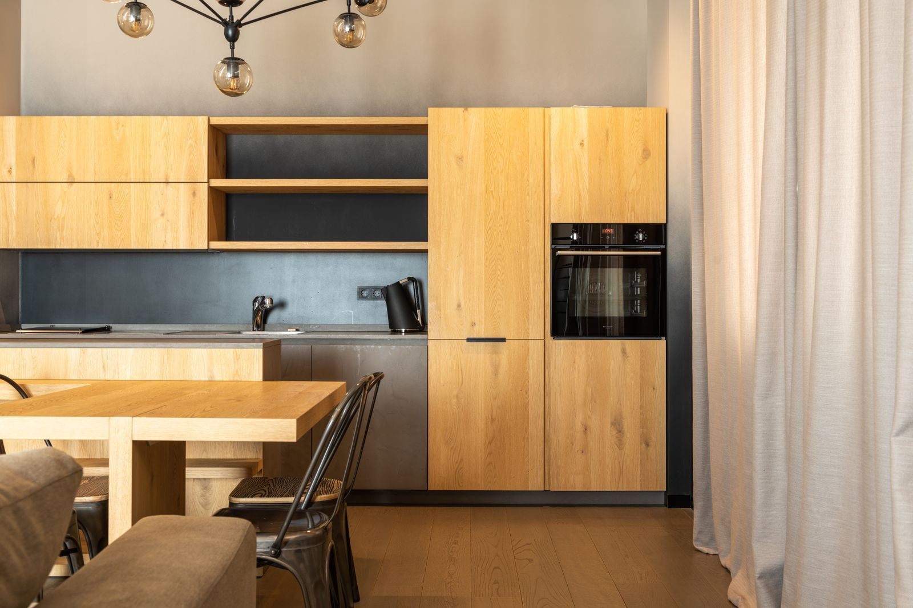

Plenty of Tulsa homeowners assume a new HVAC system is mostly about the boxes: pick a brand, pick a size, bolt it in. In practice, a full installation is three separate jobs. The equipment has to match the house, the ducts have to carry what the equipment produces, and the finished system has to be commissioned so it performs on the meter, not just on the spec sheet. That is why Tulsa HVAC begins every job with a load calculation for your Tulsa, OK home, working from square footage, insulation, window area, orientation, and air leakage. Skip that step and you get either an oversized unit that short-cycles and leaves the air clammy or an undersized one that runs all afternoon and never catches up.
Matching is the part of equipment selection most homeowners never hear about. The coil, the condenser, and the blower carry efficiency ratings as a combination, and when the pieces are mixed, the SEER2 and AFUE numbers you paid for are no longer achievable. So we size to the load and then lay out the choices honestly: single-stage versus two-stage versus variable-speed, ECM blowers versus conventional motors, and whether your home is better served by a furnace, an air handler, or a heat pump. Ductwork is the other half of the story, and most installers skip it entirely. We measure static pressure, find the leaks and undersized branches, and correct them while the system is apart, because a duct system that fights the equipment will beat it every time.
The install itself is a checklist, not a guess: line sets pressure-tested and evacuated to a micron-gauge-verified vacuum, charge weighed in and confirmed by superheat and subcooling, gas connections leak-tested, venting run to manufacturer spec, condensate trapped and protected by a float switch, and the thermostat configured for the equipment's actual staging. We finish with full commissioning, recording temperature split, temperature rise, amp draws, and static pressure, then walk you through everything before we haul the old equipment away. For a complete HVAC installation in Tulsa done to spec, call (918) 301-0260 for an assessment and a clear quote.
Our two most requested repairs are AC Repair in Tulsa and Furnace Repair in Tulsa. If something has stopped working, start there.

Warning Signs for HVAC Installation
Catching these issues early helps you avoid costly problems and protect your property. Keep an eye out for the following clues that it's time to bring in an expert:
- Your equipment depends on R-22, a refrigerant that has been phased out
- Short, frequent cooling cycles that leave the house clammy
- Rooms that stay uncomfortable however you set the registers
- Utility bills rising each season as comfort slips
- New square footage that the old equipment simply cannot keep up with
- Big repairs on both the heating and cooling side, one after another
- A system noisy enough that you have to talk over it
- Your heating and cooling equipment is past the twelve-to-fifteen-year mark
Don't Wait for a Total Failure
Most HVAC failures start small, a weak capacitor, a squealing blower, a system that runs a little longer each week. Call Tulsa HVAC at (918) 301-0260 at the first sign of trouble.
Need Help With HVAC Installation?
Our experienced technicians are standing by to help.
Get Help: (918) 301-0260HVAC Installation FAQ
Why Professional HVAC Installation Matters
Installation decides how the biggest machine in your Tulsa home will behave for the next fifteen years, and its worst mistakes are invisible at handoff. An unverified vacuum leaves moisture to breed acid inside the refrigerant circuit. A charge set by guesswork gives away efficiency month after month. A mismatched coil and condenser can never deliver the rated SEER2. Restrictive ducts force the blower to fight excess static pressure for its entire life. Add federal refrigerant rules and the safety stakes of gas piping and venting, and this is clearly not a job for guesswork.
Our experienced technicians treat installation as a chain of proofs, not a list of tasks. The load calculation proves the size. Matched equipment makes the rating reachable. A pressure test and a micron-gauge vacuum prove the circuit is tight and dry, while a weighed charge checked against superheat and subcooling proves the refrigerant side. On the heating side, gas lines are leak-tested, draft is verified, and blower speed is set to hold the rated temperature rise. Finally, commissioning puts the numbers on paper, so every future service visit has something to check against. That documentation is standard on every system we install in Tulsa.
How Our HVAC Installation Works
Every visit follows a step-by-step method refined over years of hands-on experience. Here's a look at each step our Tulsa HVAC team takes:
Load Calculation & Duct Evaluation
Your Tulsa home gets measured first: heating and cooling loads calculated from the house itself, and the ducts tested for static pressure, leaks, and undersized runs.
System Design & Firm Quote
You see matched equipment options at good, better, and best tiers, a plain explanation of what staging and efficiency buy you, and a firm installed price before work begins.
Careful, Verified Installation
Line sets are pressure-tested and evacuated to a verified vacuum, charge weighed in, gas and venting run to spec, condensate protected, and duct chokepoints corrected while the system is open.
Performance Testing & Walkthrough
We prove the install with recorded numbers, from temperature split and rise to amp draws and charge, then configure the thermostat and walk you through every control before haul-away.
Questions About HVAC Installation?
We provide honest advice and upfront pricing on all HVAC installation work.
Get Help: (918) 301-0260HVAC Installation Prevention Tips
Taking preventive measures can help you avoid costly heating and cooling problems down the road. Follow these tips from our experienced technicians:
- Book professional maintenance twice a year, spring for cooling and fall for heating
- Avoid closing registers, which upsets the airflow balance set at startup
- Flush the condensate line each cooling season before algae can trip the float switch
- Replace filters on time from the first month so the coil and exchanger never go short on airflow
- Rinse the outdoor coil and keep plants trimmed back so the condenser can breathe
- Save your commissioning report and share it with whoever services the system
- Call about new noises or slipping performance early, when fixes are simple
Should You DIY or Call a Pro?
Online tutorials may help in a pinch, yet lasting repairs and code-compliant installations usually depend on professional methods and trained technicians. Here's a comparison:
| Factor | DIY Attempt | Professional Service |
|---|---|---|
| Sizing | Tonnage copied from the old unit | Capacity matched to measured heat loss and gain |
| Matching | Mixed components, sticker ratings lost | Rated coil and condenser pairings |
| Refrigerant Work | Charge by guesswork, no verified vacuum | Charge proven by superheat and subcooling |
| Ducts | Old duct problems left in place | Ducts tested and chokepoints corrected |
| Gas & Venting | Gas joints and venting left unchecked | Every joint tested, venting to manufacturer spec |
| Commissioning | No readings, no baseline | Performance recorded as a service baseline |
Schedule Your HVAC Installation Service
Don't let a failing system get worse. Call Tulsa HVAC now for prompt, professional service.
Call (918) 301-0260 NowHVAC Installation Across the Tulsa Area
We bring HVAC installation to homes and businesses in town and across the nearby communities. Pick your area to see local details.